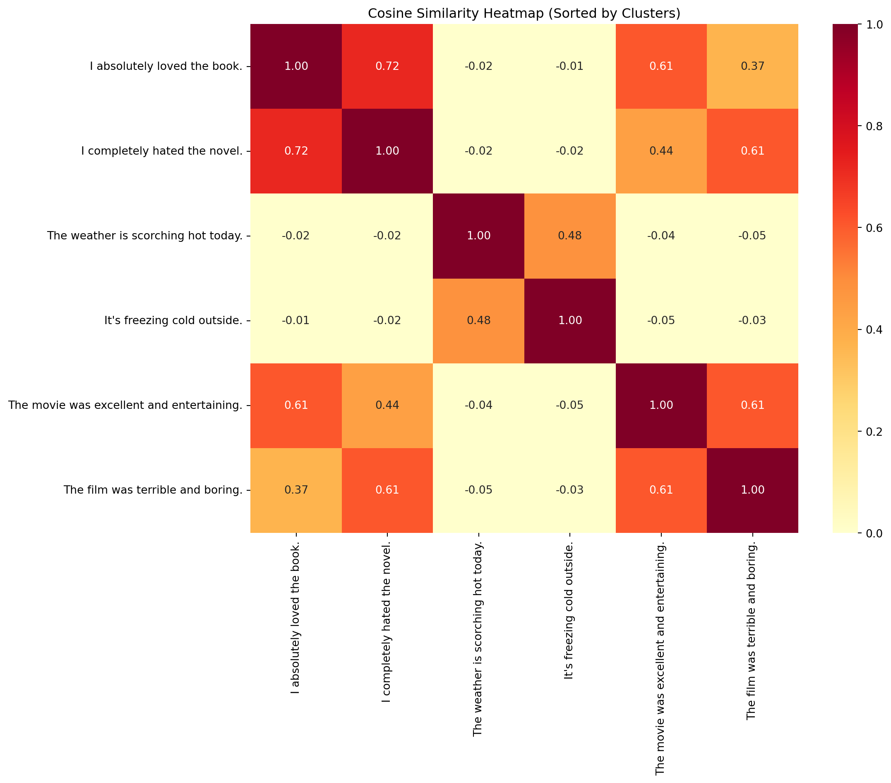

from sentence_transformers import SentenceTransformer
from sklearn.decomposition import PCA
import matplotlib.pyplot as plt
from sklearn.cluster import KMeans
import seaborn as sns
import numpy as np
import torch
def plot_embedding(phrases, num_clusters):
# Load the model
model = SentenceTransformer('all-MiniLM-L6-v2')
# Generate embeddings
embeddings = model.encode(phrases, convert_to_tensor=True)
# Convert to numpy for PCA and KMeans
embeddings_np = embeddings.cpu().numpy()
# Reduce to 2 dimensions using PCA
pca = PCA(n_components=2)
embeddings_2d = pca.fit_transform(embeddings_np)
# Perform clustering using KMeans
kmeans = KMeans(n_clusters=num_clusters, random_state=42)
cluster_labels = kmeans.fit_predict(embeddings_np)
# Plot the 2D embeddings with clusters
plt.figure(figsize=(10, 8))
colors = ['red', 'blue', 'green', 'purple']
for i, (x, y) in enumerate(embeddings_2d):
plt.scatter(x, y, color=colors[cluster_labels[i]], label=f"Cluster {cluster_labels[i]}" if f"Cluster {cluster_labels[i]}" not in plt.gca().get_legend_handles_labels()[1] else "")
plt.text(x + 0.02, y, phrases[i], fontsize=9)
plt.title("2D Visualization of Sentence Embeddings with Clustering")
plt.xlabel("PCA Dimension 1")
plt.ylabel("PCA Dimension 2")
plt.legend(loc='best', fontsize=8)
plt.grid(True)
plt.axis('equal')
plt.show()
return embeddings, cluster_labels
def plot_heatmap(phrases, embeddings, cluster_labels):
# Calculate cosine similarity matrix
#similarity_matrix = util.cos_sim(embeddings, embeddings).cpu().numpy()
# Calculate cosine similarity matrix
similarity_matrix = np.inner(embeddings, embeddings)
# Create a DataFrame for the heatmap
import pandas as pd
df = pd.DataFrame(similarity_matrix, index=phrases, columns=phrases)
# Sort the DataFrame by cluster labels
sorted_indices = np.argsort(cluster_labels)
df = df.iloc[sorted_indices, sorted_indices]
# Plot the heatmap
plt.figure(figsize=(12, 10))
sns.heatmap(df, cmap='YlOrRd', annot=True, fmt=".2f", vmin=0, vmax=1)
plt.title("Cosine Similarity Heatmap (Sorted by Clusters)")
plt.tight_layout()
plt.show()
# Print the similarity matrix
# print("Similarity Matrix:")
# print(df)Plotting Embeddings and Heatmaps for Opposite Sentences
Plotting Embeddings and Heatmaps for Opposite Sentences
First, we’ll import the necessary libraries and create functions to plot embeddings and heatmaps for our opposite sentences example.
Now, let’s apply these functions to some opposite sentences.
Opposite Sentences Example
In this example, we’ve chosen three pairs of opposite sentences:
- “The movie was excellent and entertaining.” vs “The film was terrible and boring.”
- “I absolutely loved the book.” vs “I completely hated the novel.”
- “The weather is scorching hot today.” vs “It’s freezing cold outside.”
Opposite Sentences Embeddings
# Opposite sentences
phrases = [
"The movie was excellent and entertaining.",
"The film was terrible and boring.",
"I absolutely loved the book.",
"I completely hated the novel.",
"The weather is scorching hot today.",
"It's freezing cold outside."
]
embeddings, cluster_labels = plot_embedding(phrases, 3)huggingface/tokenizers: The current process just got forked, after parallelism has already been used. Disabling parallelism to avoid deadlocks...
To disable this warning, you can either:
- Avoid using `tokenizers` before the fork if possible
- Explicitly set the environment variable TOKENIZERS_PARALLELISM=(true | false)
huggingface/tokenizers: The current process just got forked, after parallelism has already been used. Disabling parallelism to avoid deadlocks...
To disable this warning, you can either:
- Avoid using `tokenizers` before the fork if possible
- Explicitly set the environment variable TOKENIZERS_PARALLELISM=(true | false)
Opposite Sentences Heatmap
plot_heatmap(phrases, embeddings, cluster_labels)/tmp/ipykernel_43806/2156628734.py:49: DeprecationWarning:
__array__ implementation doesn't accept a copy keyword, so passing copy=False failed. __array__ must implement 'dtype' and 'copy' keyword arguments.

The embedding plot should show these pairs clustered separately, while the heatmap should reveal high similarity within each pair and lower similarity between opposite pairs.